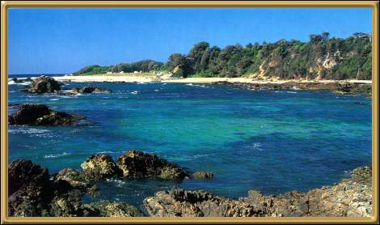

Photographer: Unknown
This is a very famous fishing resort, and the beaches are apparently frequented by lapidary collectors. I believe this particular beach is called Mystery Bay because of it's strange rock formations and coloured sands. The area is also very well known for its Rock Oysters.